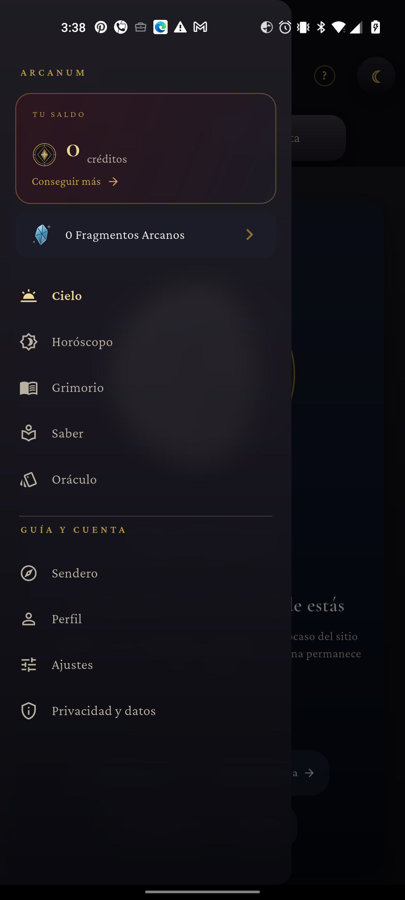
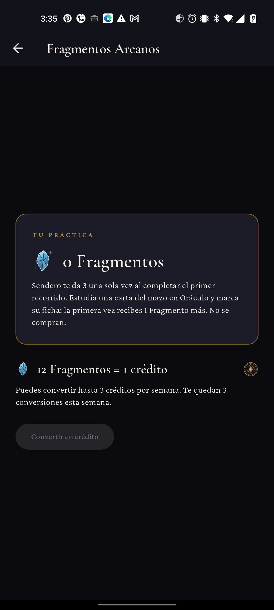
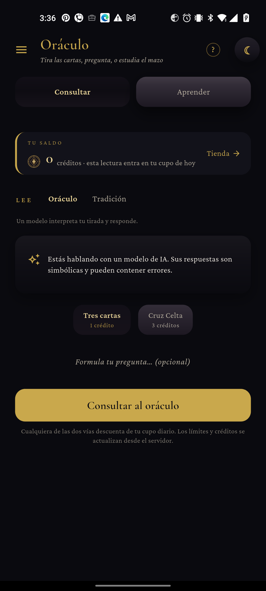
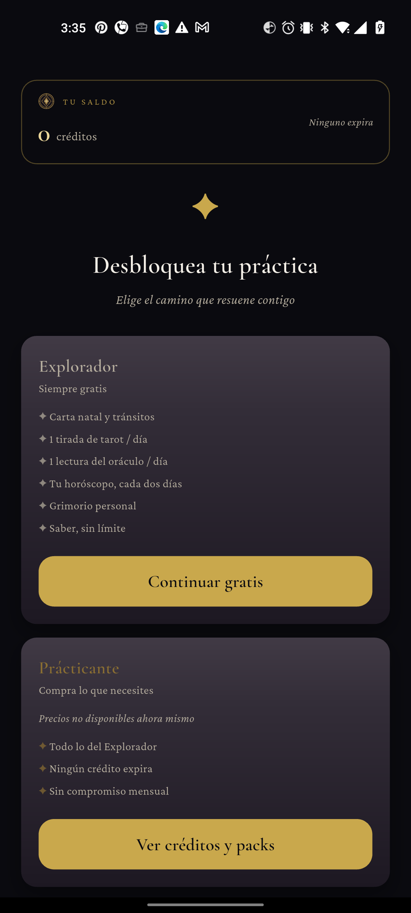
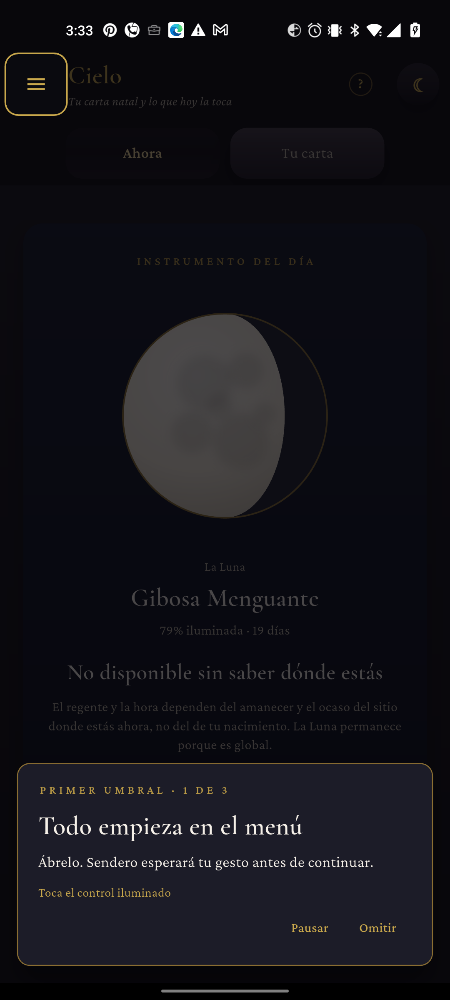
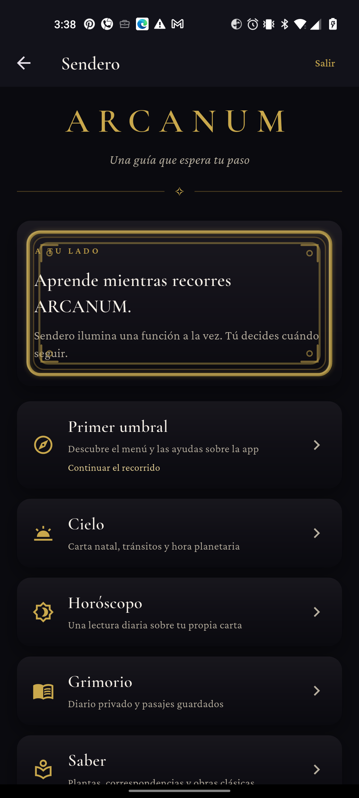

La astilla y el sello, en la app real.
Los símbolos se leen bien en menú y saldos. Sendero conserva un problema de composición en su portada.
Compilada e instalada el 30 de septiembre de 2026. Cuenta de prueba, 0 Fragmentos y 0 créditos. No hubo compras, canjes ni lecturas.
01 / Monedas
Visual verificadoLa astilla azul y el sello dorado se distinguen incluso en el cajón. Conservan parentesco visual sin confundirse.


02 / Saldos relacionados
Consistencia visualEl sello acompaña al saldo tanto en Oráculo como en la tienda. No se observó desborde del emblema.


03 / Sendero
Corrección visual pendienteLa guía interactiva sí ilumina controles reales y se puede pausar. Pero el marco ornamental de la portada invade el rótulo y el texto: dificulta leer el mensaje inicial.


Alcance: capturas del cajón, Fragmentos, Oráculo, tienda y Sendero en un solo dispositivo. No se probó el canje con saldo suficiente, el gasto de créditos ni todos los estados del tutorial. La pantalla de Fragmentos deja un gran vacío entre cabecera y contenido; conviene revisar su alineación vertical. No se editó código de la app durante este QA.